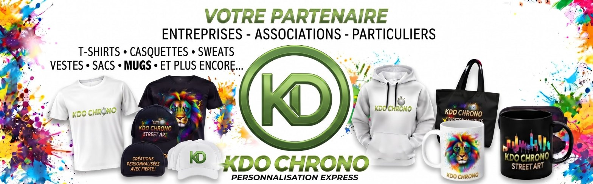
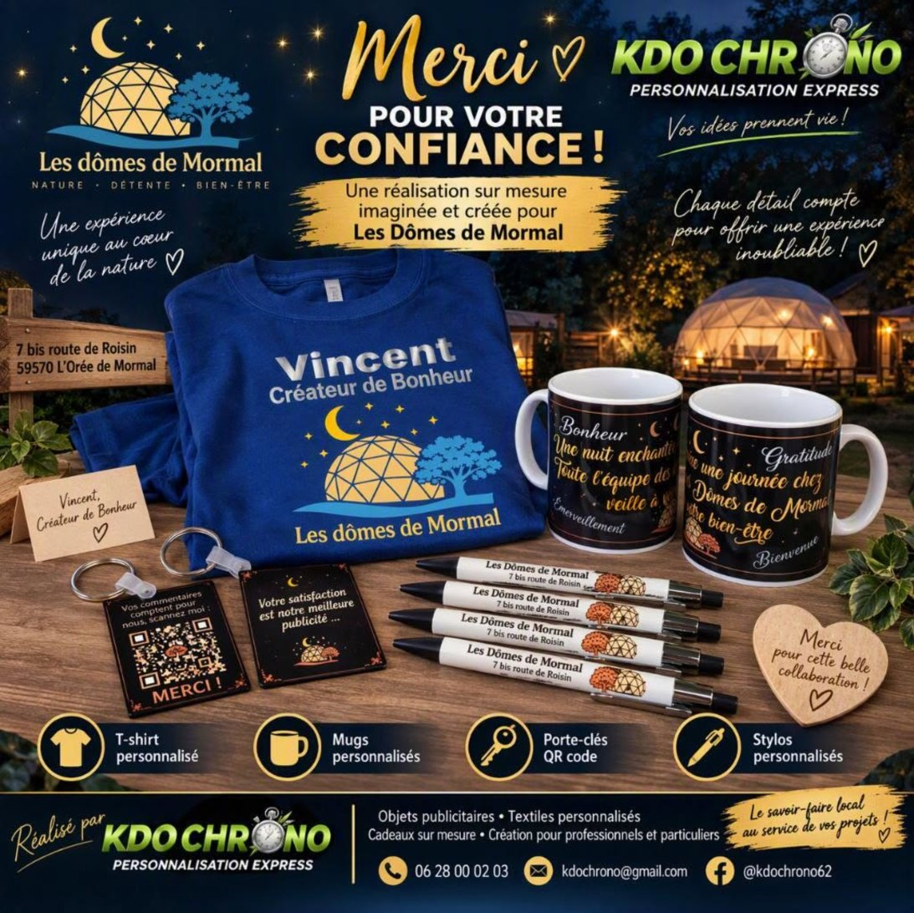

👕
T-shirts
Votre logo, un prénom, une citation.
T-shirts, casquettes, sweats, vestes, sacs, mugs et plus encore : pour les entreprises, les associations et les particuliers.

Visuel publié par Kdo Chrono sur sa page Facebook.
Les supports
Votre logo, un prénom, une citation.
Textiles personnalisés à votre image.
Pour l'équipe, l'asso ou pour offrir.
Pratiques et à votre image.
Le cadeau qui sert tous les matins.
Y compris porte-clés à QR code.
Objets publicitaires à votre nom.
Une idée ? Demandez, on en parle.

Réalisation
Une commande personnalisée aux couleurs de l'établissement, alliant utilité et élégance :

Noël approche
T-shirts, bonnets, casquettes, sweats, mugs et tote bags aux couleurs des fêtes. Kdo Chrono cherche aussi des emplacements sur les marchés de Noël de la région.
Commander pour Noël